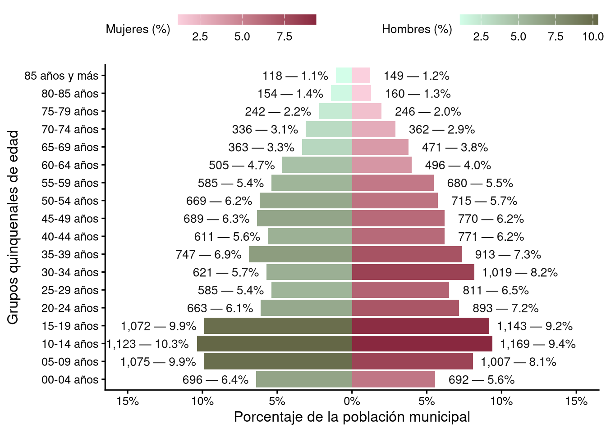

CVE_ENT CVE_MUN FACTOR SEXO EDAD
1 13 1 2 3 53
2 13 1 2 3 32
3 13 1 2 1 23
4 13 1 2 3 25
5 13 1 2 3 5
6 13 1 2 3 42Analisis de población por municipio
Análisis de las pirámides de población por cada municipio del estado de Hidalgo
En este repositorio se realiza un análisis gráfico con histogramas de los datos de población reportados en la Encuesta Intercensal (EIC) presentados por el INEGI; los 4 programas que componen este repositorio al momento de la creación de este documento realizan lo siguiente:
Creación de las pirámides poblacionales para cada municipio a partir de los datos presentados por INEGI, que reporta grupos quinquenales hasta 75 años y más para cada municipio, probando diferentes estilos y, en general, una primera aproximación del procesamiento final.
Pruebas para la construcción de grupos quinquenales que abarquen la población hasta 85 años y más a partir de los microdatos de la EIC; de donde se obtiene que los datos creados a partir de los microdatos son iguales a los reportados por INEGI en la EIC simple.
Construcción de las gráficas de pirámides poblacionales a partir de los microdatos hasta los 85 años de edad para todos los municipios del estado; esta etapa queda como la final de este procesamiento.
Creación de una hoja de cálculo en Excel con las claves de cada municipio y los gráficos generados en el paso anterior para una posterior carga en un reporte de Canva de manera automática.
Demostración del funcionamiento
El procesamiento de la etapa 3 contruido de los microdatos lleva la siguiente estructura
Estos datos ya fueron filtrados previamente, dejando solo la información correspondiente al estado de Hidalgo. Los datos por sexo tienen la clave 1 para hombres, 3 para mujeres; la columna factor nos indica cuántas personas hay de la edad correspondiente a su renglón en su respectivo municipio, por lo que el procesamiento involucra la transformación de las claves por sexo y agrupar la información por factor de edad en grupos quinquenales hasta los 85 años y más para cada uno de los municipios a partir de su CVE_MUN.
library(dplyr)
etiquetas_piram <- c( #Etiquetas para cada grupo quinquenal hasta los 85 años
"00-04 años", "05-09 años", "10-14 años", "15-19 años",
"20-24 años", "25-29 años", "30-34 años", "35-39 años",
"40-44 años", "45-49 años", "50-54 años", "55-59 años",
"60-64 años", "65-69 años", "70-74 años", "75-79 años",
"80-85 años", "85 años y más"
)
"dat/eic_micro_municipio.csv" |> read.csv() -> micro_eic2025
micro_eic2025 <- micro_eic2025[,-1] #Elimino columna con la clave del estado (13 = Hidalgo)
micro_eic2025<- micro_eic2025 |>
dplyr::mutate(SEXO = dplyr::case_when(
SEXO == 1 ~ "hombres",
SEXO == 3 ~ "mujeres")) |>#Se cambia la etiqueta numerica por la de genero
dplyr::rename(sexo=SEXO)
micro_eic2025 |>
dplyr::filter(EDAD != 999) |> #se eliminan datos no especificados
dplyr::mutate(grup_quin = cut(EDAD, breaks = c(seq(0, 85, 5),Inf), right = FALSE, labels = etiquetas_piram)) |>
#Se crean los grupos quinquenales en intervalos [k:k+5) con el grupo de +85 absorviendo el resto del a poblacion
dplyr::group_by(CVE_MUN, sexo, grup_quin, .drop = FALSE) |>
dplyr::summarise(abs = sum(FACTOR, na.rm = TRUE), .groups = "drop") |>
dplyr::mutate(grup_quin = as.character(grup_quin)) -> municipios_micro
#Creamos un arreglo de tablas a partir de la clave del municipio
municipios_micro<-split(municipios_micro,municipios_micro$CVE_MUN)
#Visualizamos el arreglo ya procesado
head(municipios_micro)$`1`
# A tibble: 36 × 4
CVE_MUN sexo grup_quin abs
<int> <chr> <chr> <int>
1 1 hombres 00-04 años 696
2 1 hombres 05-09 años 1075
3 1 hombres 10-14 años 1123
4 1 hombres 15-19 años 1072
5 1 hombres 20-24 años 663
6 1 hombres 25-29 años 585
7 1 hombres 30-34 años 621
8 1 hombres 35-39 años 747
9 1 hombres 40-44 años 611
10 1 hombres 45-49 años 689
# ℹ 26 more rows
$`2`
# A tibble: 36 × 4
CVE_MUN sexo grup_quin abs
<int> <chr> <chr> <int>
1 2 hombres 00-04 años 2100
2 2 hombres 05-09 años 2485
3 2 hombres 10-14 años 2679
4 2 hombres 15-19 años 2500
5 2 hombres 20-24 años 1805
6 2 hombres 25-29 años 1544
7 2 hombres 30-34 años 1518
8 2 hombres 35-39 años 1562
9 2 hombres 40-44 años 1464
10 2 hombres 45-49 años 1296
# ℹ 26 more rows
$`3`
# A tibble: 36 × 4
CVE_MUN sexo grup_quin abs
<int> <chr> <chr> <int>
1 3 hombres 00-04 años 1435
2 3 hombres 05-09 años 1960
3 3 hombres 10-14 años 2552
4 3 hombres 15-19 años 2901
5 3 hombres 20-24 años 2262
6 3 hombres 25-29 años 1827
7 3 hombres 30-34 años 1965
8 3 hombres 35-39 años 1944
9 3 hombres 40-44 años 1686
10 3 hombres 45-49 años 1747
# ℹ 26 more rows
$`4`
# A tibble: 36 × 4
CVE_MUN sexo grup_quin abs
<int> <chr> <chr> <int>
1 4 hombres 00-04 años 351
2 4 hombres 05-09 años 467
3 4 hombres 10-14 años 437
4 4 hombres 15-19 años 445
5 4 hombres 20-24 años 335
6 4 hombres 25-29 años 269
7 4 hombres 30-34 años 322
8 4 hombres 35-39 años 261
9 4 hombres 40-44 años 278
10 4 hombres 45-49 años 253
# ℹ 26 more rows
$`5`
# A tibble: 36 × 4
CVE_MUN sexo grup_quin abs
<int> <chr> <chr> <int>
1 5 hombres 00-04 años 450
2 5 hombres 05-09 años 695
3 5 hombres 10-14 años 793
4 5 hombres 15-19 años 835
5 5 hombres 20-24 años 714
6 5 hombres 25-29 años 584
7 5 hombres 30-34 años 632
8 5 hombres 35-39 años 636
9 5 hombres 40-44 años 571
10 5 hombres 45-49 años 585
# ℹ 26 more rows
$`6`
# A tibble: 36 × 4
CVE_MUN sexo grup_quin abs
<int> <chr> <chr> <int>
1 6 hombres 00-04 años 525
2 6 hombres 05-09 años 729
3 6 hombres 10-14 años 965
4 6 hombres 15-19 años 929
5 6 hombres 20-24 años 631
6 6 hombres 25-29 años 434
7 6 hombres 30-34 años 496
8 6 hombres 35-39 años 659
9 6 hombres 40-44 años 619
10 6 hombres 45-49 años 612
# ℹ 26 more rowsProcesamiento y creación de las gráficas
Creamos una función que haga que cada dataframe en el arreglo pase a formato vertical y pase a la función de graficación.
library(ggplot2)
library(tidyr)
library(stringr)
library(ggnewscale)
# 0. Configuración global
dir_salida <- "piramides_mun"
dir.create(dir_salida, showWarnings = FALSE)
niveles_edad <- etiquetas_piram
# 1. Función: preparar datos
preparar_piramide <- function(df_municipio, niveles) {
df_municipio |>
group_by(sexo) |>
mutate(pct = abs / sum(abs) * 100) |>
ungroup() |>
mutate(
edad = factor(grup_quin, levels = niveles, ordered = TRUE),
poblacion_plot = ifelse(sexo == "hombres", -pct, pct),
etiqueta = sprintf("%s — %.1f%%",
format(abs, big.mark = ","), pct),
sexo = factor(sexo, levels = c("hombres", "mujeres"))
)
}
# 2. Función: construir el plot
graficar_piramide <- function(piramide) {
max_pop <- max(piramide$pct)
ggplot(piramide, aes(x = edad, y = poblacion_plot)) +
geom_col(data = subset(piramide, sexo == "hombres"),
aes(fill = pct), width = 0.9) +
scale_fill_gradient(
low = "#D3FEE9", high = "#646746", name = "Hombres (%)",
guide = guide_colorbar(barwidth = 8, barheight = 0.6)
) +
new_scale_fill() +
geom_col(data = subset(piramide, sexo == "mujeres"),
aes(fill = pct), width = 0.9) +
scale_fill_gradient(
low = "#FBD0DE", high = "#89283f", name = "Mujeres (%)",
guide = guide_colorbar(barwidth = 8, barheight = 0.6)
) +
geom_text(
aes(label = etiqueta,
hjust = ifelse(sexo == "hombres", 1.1, -0.1)),
size = 3.5, color = "grey8"
) +
coord_flip() +
scale_y_continuous(
labels = function(x) paste0(abs(x), "%"),
breaks = scales::pretty_breaks(n = 8),
limits = c(-max_pop * 1.45, max_pop * 1.45)
) +
labs(x = "Grupos quinquenales de edad",
y = "Porcentaje de la población municipal") +
theme_classic(base_size = 12) +
theme(
legend.position = "top",
legend.box = "horizontal",
legend.direction = "horizontal",
legend.spacing.x = unit(1.5, "cm"),
legend.title = element_text(size = 10),
panel.grid.major.y = element_blank(),
panel.background = element_rect(fill = "transparent", color = NA),
plot.background = element_rect(fill = "transparent", color = NA),
legend.background = element_rect(fill = "transparent", color = NA),
legend.key = element_rect(fill = "transparent", color = NA)
)
}Al aplicar las funciones sobre el arreglo de municipios_micro, obtenemos lo siguiente:
#Grafica de prueba
municipios_micro[["1"]] |>
preparar_piramide(niveles_edad) |>
graficar_piramide() 
Aplicamos este procesamiento sobre el arreglo municipios_micro completo mediante procesamiento en paralelo con la librería purrr.
library(purrr)
walk(names(municipios_micro), function(nombre) {
message("Procesando: ", nombre)
nombre_limpio <- gsub('[/\\\\:**?"<>|]', "_", nombre)
municipios_micro[[nombre]] |>
preparar_piramide(niveles_edad) |>
graficar_piramide() |>
ggsave(
filename = file.path(dir_salida,
paste0(nombre_limpio, "_piramide.png")),
width = 10, height = 7, dpi = 300, bg = "transparent"
)
})Finalmente, el cuarto script se encarga de realizar un documento en Excel con la librería openxlsx que contiene la clave de los municipios y su respectiva gráfica de la población para una posterior creación automática de un reporte con esta información en Canva, el cual puede crear un reporte de forma automática con imágenes que estén contenidas de forma ordenada en un Excel.
library(openxlsx)
# 1. Definir la carpeta donde están los PNG
carpeta_imgs <- "piramides_mun"
# 2. Obtener la lista de todas las imágenes
archivos <- list.files(carpeta_imgs, pattern = "\\.png$", full.names = TRUE)
# 3. Extraer la clave numérica del nombre del archivo
# Extraemos solo los primeros dígitos antes del guion bajo
cves_numericas <- as.numeric(gsub("^([0-9]+).*", "\\1", basename(archivos)))
# 4. Reconstruir las claves como texto con 3 dígitos (ej. 1 -> "001")
cves_texto <- sprintf("%03d", cves_numericas)
# 5. Ordenar los archivos y las claves para que el Excel quede ordenado
orden <- order(cves_numericas)
archivos <- archivos[orden]
cves_texto <- cves_texto[orden]
# 6. Crear el data.frame base
datos_excel <- data.frame(
CVE_MUN = cves_texto,
ruta_imagen = archivos,
stringsAsFactors = FALSE
)
# 7. Construcción del Excel -----------------------------------------------
wb <- openxlsx::createWorkbook()
openxlsx::addWorksheet(wb, "Piramides")
# Escribir la columna de CVE_MUN
openxlsx::writeData(wb, "Piramides", datos_excel[, "CVE_MUN", drop = FALSE], startCol = 1)
# Escribir el encabezado de la columna de imágenes
openxlsx::writeData(wb, "Piramides", "Piramides", startCol = 2, startRow = 1)
# IMPORTANTE: Dar formato de "Texto" a la columna A para que Excel no quite los ceros
estilo_texto <- openxlsx::createStyle(numFmt = "@")
openxlsx::addStyle(wb, sheet = "Piramides", style = estilo_texto,
rows = 2:(nrow(datos_excel) + 1), cols = 1)
# Ajustar el tamaño de las columnas y filas
openxlsx::setColWidths(wb, "Piramides", cols = 1, widths = 15)
openxlsx::setColWidths(wb, "Piramides", cols = 2, widths = 35) # Columna ancha para la imagen
openxlsx::setRowHeights(wb, "Piramides", rows = 2:(nrow(datos_excel) + 1), heights = 200)
# 8. Insertar las imágenes en un bucle
for (i in seq_len(nrow(datos_excel))) {
openxlsx::insertImage(
wb = wb,
sheet = "Piramides",
file = datos_excel$ruta_imagen[i],
startRow = i + 1, # +1 por el encabezado
startCol = 2, # Columna B
width = 3,
height = 2.5,
units = "in",
dpi = 300
)
if (i %% 10 == 0) message("Insertadas ", i, " imágenes de ", nrow(datos_excel))
}
# 9. Guardar el archivo final
openxlsx::saveWorkbook(wb, "piramides_canva.xlsx", overwrite = TRUE)